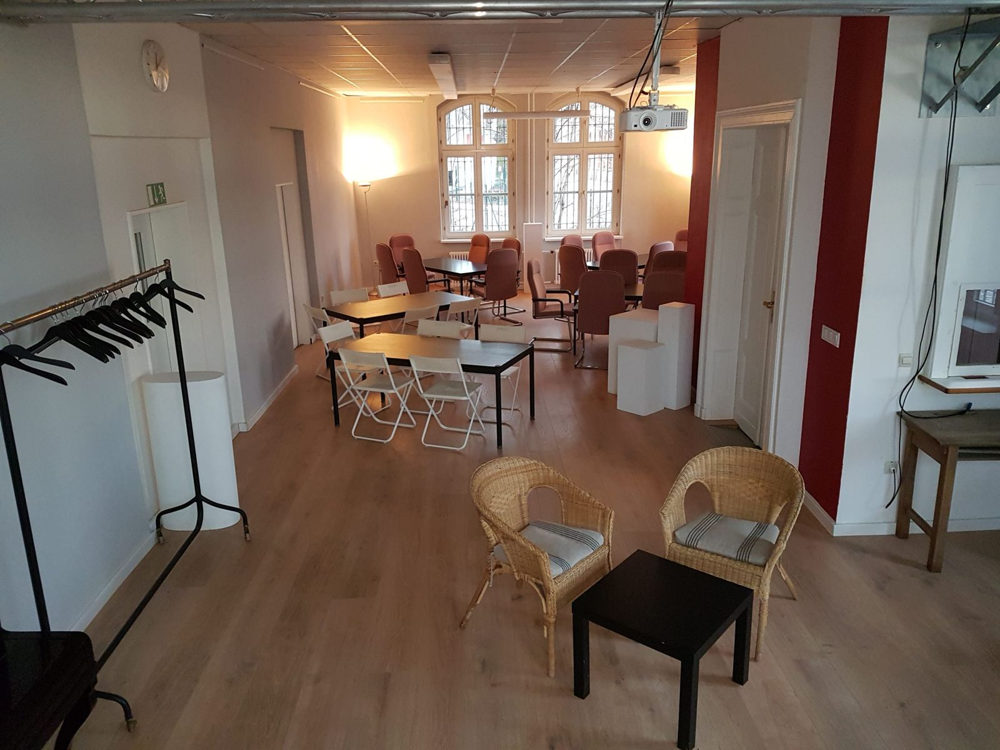
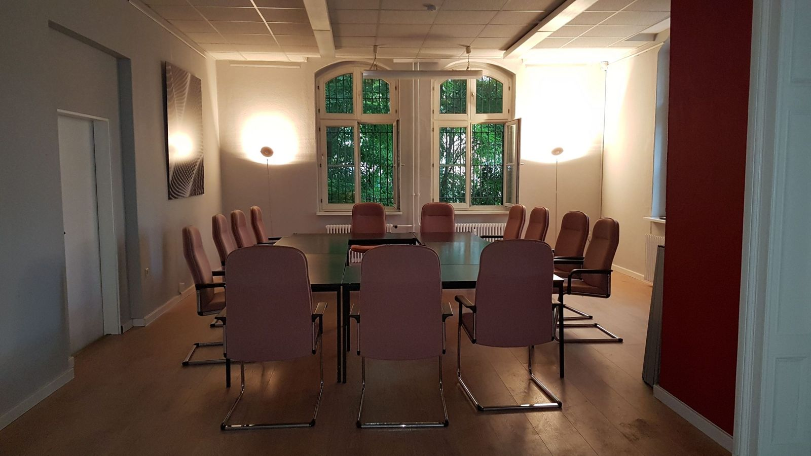

Tagen & Arbeiten
Gute Gedanken
brauchen auch Luft.
Seminare, Workshops und Tagungen im InselSalon. Gemeinsam arbeiten – und die Pause durch die Terrassentür nach draußen verlegen.

Konzentriert zusammenkommen
Ein Raum für Austausch.
Ob Tagung, Seminar, Sitzung, Vortrag, Unterricht oder Arbeitsgruppe: Der ca. 80 m² große InselSalon bietet einen gemeinsamen Ort für Ihre Inhalte.
Leinwand, Beamer und Flipchart können bereitgestellt werden. Kostenfreies WLAN steht zur Verfügung; bei Bedarf ist Kopieren möglich.
Tagung oder Seminar anfragen

Zwischen zwei Tagesordnungspunkten
Raus aus dem Seminarraum.
Planen Sie eine Pause auf der Terrasse, das gemeinsame Mittagessen aus der Café-Küche oder eine Arbeitsgruppe im Garten. Die Nutzung von Café, Küche und Außenbereichen stimmen wir mit Ihnen ab.
Für die Selbstversorgung im Raum gibt es eine Mini-Teeküche. Getränke und kleine Snacks sind gegen Aufpreis möglich.
Workshop oder Unterricht anfragenFür Ihre Planung
Ein Termin. Ihre Arbeitsweise.
Ein schwellenfreier Zugang ist möglich. Welche Tischanordnung, Personenzahl und Technik Sie brauchen, klären wir mit Ihrer Anfrage. Tages-, Wochen- oder Monatssätze vereinbaren wir vorab; bitte buchen Sie rechtzeitig.
Was steht bei Ihnen an?
Beschreiben Sie uns Ihre Veranstaltung und die gewünschte Ausstattung.